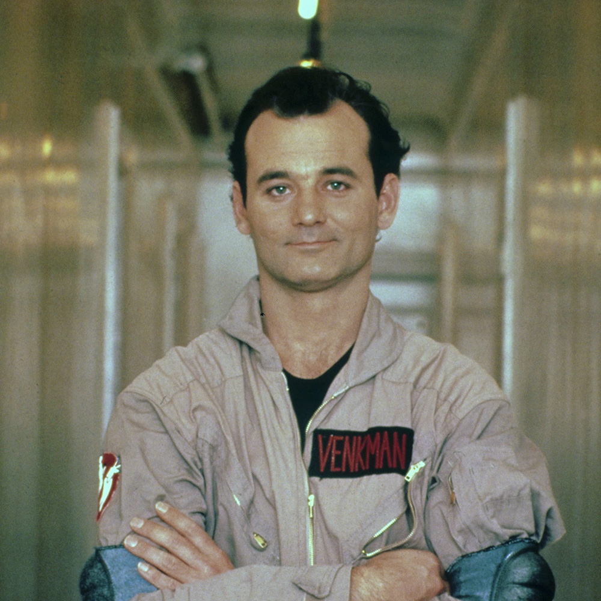
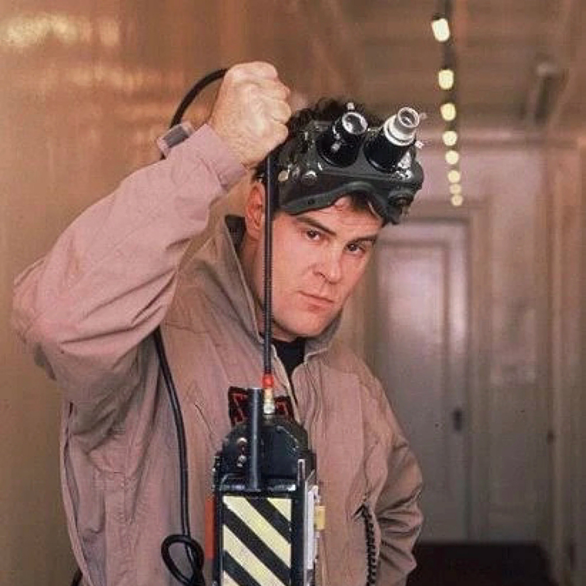
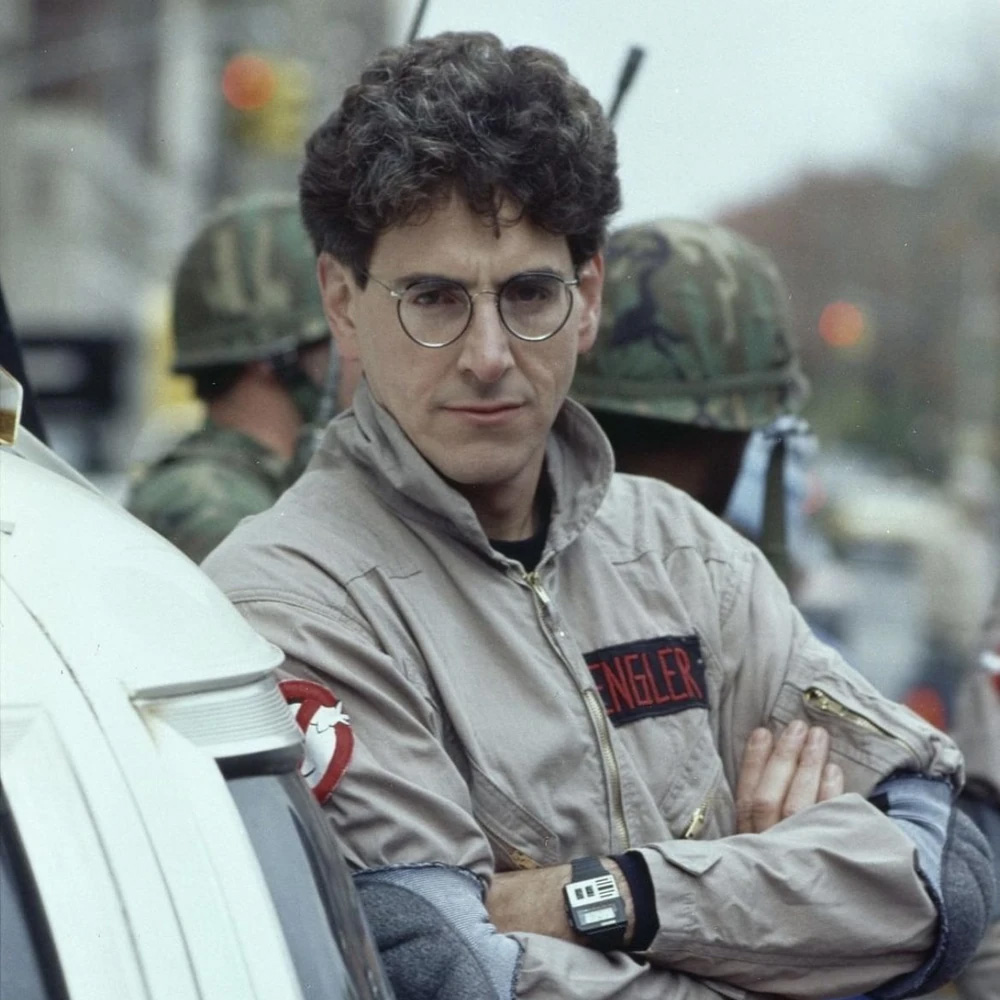
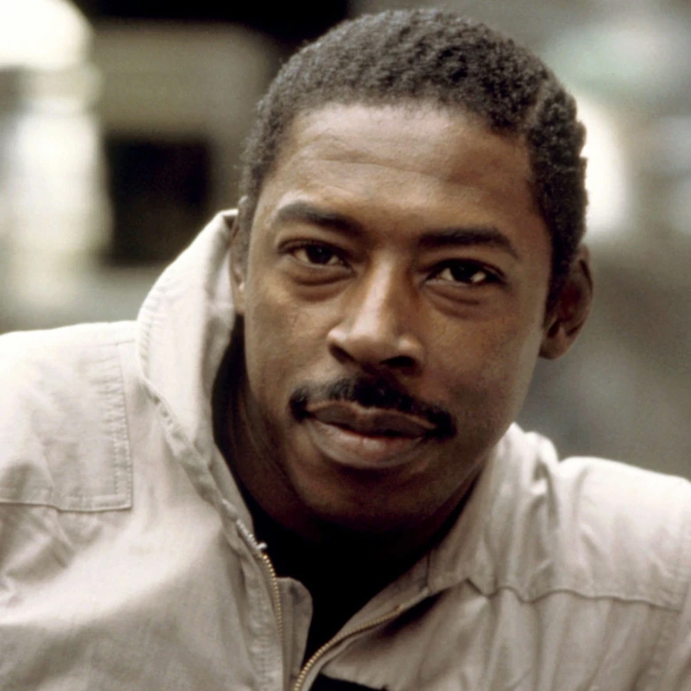

We are Ghostbusters Inc.
We are THE Ghostbusters and there are none other.
Who are we?
Ghostbusters, Inc. originally began its existence through the combined research of parapsychology professors Ray Stantz, Egon Spengler and (to a lesser degree) Peter Venkman, seemingly unimpressive faculty members of Columbia University who often found themselves scrutinized by their superiors for their seemingly fruitless research and ethically questionable experiments. Fortunately for them, but unfortunately for the people of New York, paranormal activity slowly began to see a significant increase across the city due to the effects of an inter-dimensional cross rip caused by the slow manifestation of the ancient Sumerian deity known as Gozer, a summoning made possible due to the past actions of the Shandor Architectural Firm which had designed a special building which would serve as a conduit for Gozer's arrival.
Meet the team:

Dr. Peter Venkman — Head of Paranormal Psychology & Client Relations
Armed with dual doctorates in parapsychology and psychology, Peter is the smooth-talking face of Ghostbusters Inc. While he prefers charm and quick wit over heavy lifting, his sharp instincts and fearless attitude keep clients calm when things start floating across the room. If a spirit needs to be negotiated witt, or roasted before capture, Peter is the guy on the front line.

Dr. Raymond "Ray" Stantz — Chief Spectral Engineer & Heart of the Team
An encyclopedic expert on paranormal history and the occult, Ray brings unmatched enthusiasm to every haunting. He is the mechanical mastermind behind the Ecto-1 and co-designer of the team's proton packs and containment grid. No matter how terrifying the apparition, Ray treats every encounter like the greatest scientific discovery of his life.

Dr. Egon Spengler — Lead Theoretical Physicist & Equipment Architect
The quiet genius behind Ghostbusters Inc., Egon calculates the complex quantum mechanics that keep the team's unlicensed nuclear accelerators from blowing up a city block. Rarely seen without his PKE meter, he approaches every ghostly crisis with pure logic, meticulous data, and a steady hand. Just remember his golden rule: never, ever cross the streams.

Winston Zeddemore — Senior Containment Specialist & Field Operative
Hired as the team's pragmatic anchor, Winston brings grounded common sense and nerves of steel to the chaos of paranormal elimination. He isn't interested in academic theories, he is here to suit up, strap on a proton pack, and get the job done safely. When a Class-7 manifestation threatens the city, Winston is the steady presence you want watching your back.
Milestones:
- 1984 — Founded the Company & Opened HQ
- 1984 — First Successful Capture (The Sedgewick Hotel)
- 1984 — Saved New York from Gozer
- 1989 — Reopened & Defeated Vigo the Carpathian
- 2021 — Next-Generation Expansion (Summerville Division)
- 2024 — Upgraded Containment Grid & Global Readiness